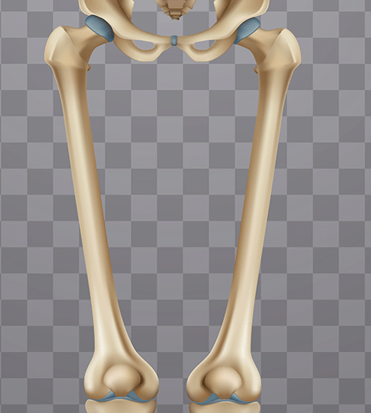
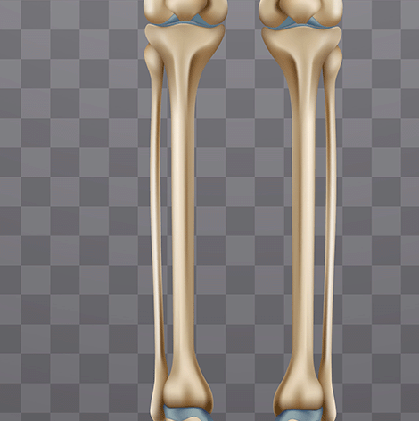
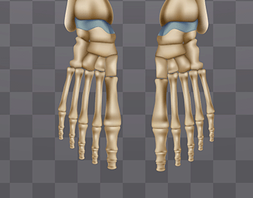

Haz clic en las diferentes áreas de la imagen para obtener más información

Muslo
Información detallada sobre la anatomía del muslo, músculos principales y funciones específicas.

Pierna
Explorar la estructura de la pierna, huesos tibia y peroné, y músculos flexores y extensores.

Pie
Anatomía completa del pie, huesos del tarso, metatarso y falanges.